{kind=link}
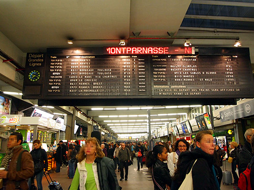
シートのすわり心地が最高。 --------------------------------------------------- 座位不錯！軟軟的座位！ ---------------------------------------------------{kind=link}
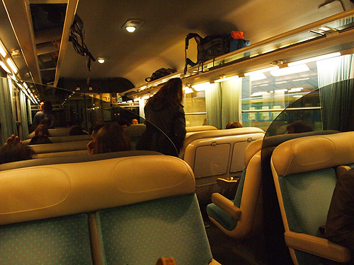
うとうとしながらシャルトルに到着。 --------------------------------------------------- 我一睡覺睡覺就到[Chartres]了 ---------------------------------------------------{kind=link}
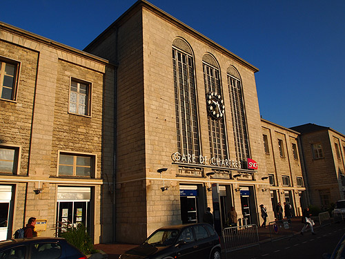
青空に映えるシャルトル大聖堂。 しかし正面方向が改修工事中。斜め横からの撮影。 --------------------------------------------------- 那兒有藍色的天空和[Chartres]教堂。 可是教堂前面架構中。 ---------------------------------------------------{kind=link}
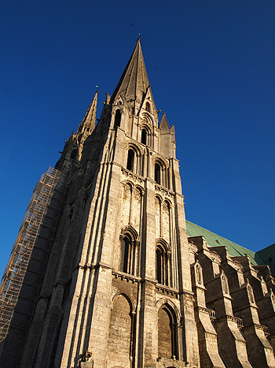
先端恐怖症には見るのが辛かろう。 --------------------------------------------------- 可能。。。尖端恐怖症人不敢看！ ---------------------------------------------------{kind=link}
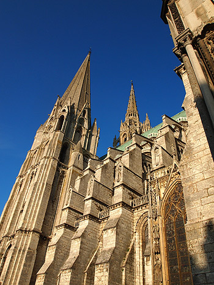
シャルトル大聖堂は繊細なステンドガラス、そして独特のブルー「シャルトルブルー」が有名。 --------------------------------------------------- [Chartres]教堂的藍色玻璃很有名 ---------------------------------------------------{kind=link}
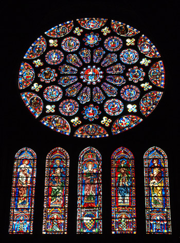
{kind=link}
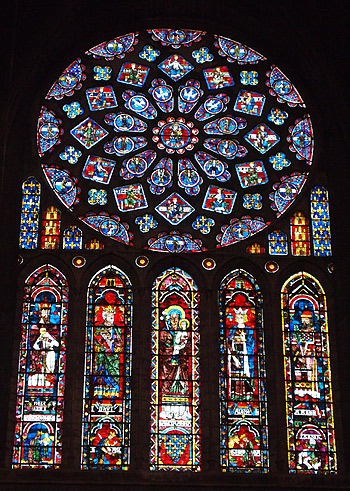
{kind=link}
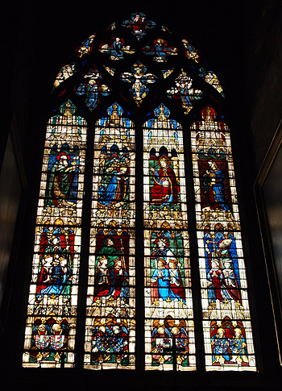
見上げてばかりいた頭を下に落とすと巡礼の道。 迷路のようだけど、迷いのない一本道。 けれどもくねくねと先が見えないこの道は、未来が決まっているにもかかわらず迷ってばかりの人の困難を体現させてくれているかのよう。 裸足でゆっくりゆっくり踏みしめている人がたくさんいた。 --------------------------------------------------- 我一直看上面，然後我往下看。 地板上的畫是巡禮路。 好像迷路。。。可是沒有錯的路。因爲它只有一條路。 我看到了光腳走路的人。 ---------------------------------------------------{kind=link}
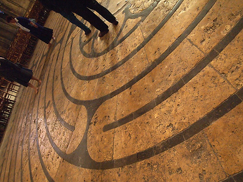
{kind=link}
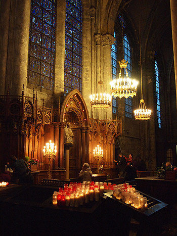
「ピカシェットの家」 ひとりのフツーのおじさまが、こつこつこつこつ墓守の合間に築き上げた建物。 陶磁器片のモザイクがユニークでとてもかわいらしいという話！ しかし詳しい場所を調べてこなかったので観光案内所で聞いてみると… 「今日はお休みよー！」 「えーーーーー！！！！」 「今は週末しかやってないのよ！明日来なさい！いいトコだから明日来なさい！」 「えーーーーー」 --------------------------------------------------- [Maison Picassiette] 我先看教堂，再去一家建築物是[Maison Picassiette]。 聽説這家建築物是一個看墳人一邊看墳一邊做的建築物。 這傢建築物用陶瓷的小塊，很好看，很可愛。 可是我不知道這家建築物的地方。所以我要去觀光案内所。。。 可是案内所的人告訴我。。。 [今天停止開放了] [真的嗎---！！！！！] [最近開館只是周末呀！這兒很好！你該明天去吧！] [真的嗎---！！！！！] ---------------------------------------------------{kind=link}
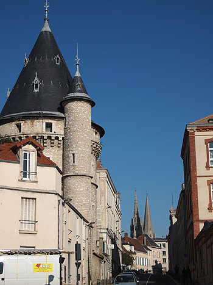
しかし残り少なくなっていたパリ滞在。 そうやすやすと連続してシャルトルまで出てくるわけにもいかず… --------------------------------------------------- 不過我沒在巴黎的時間。 我不能去再這兒。。。 ---------------------------------------------------{kind=link}
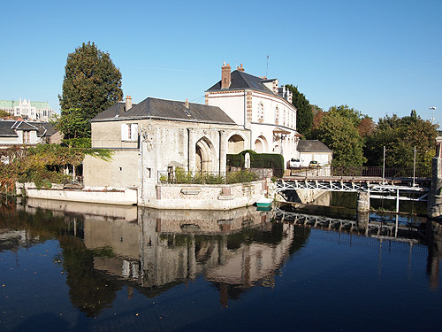
美しいシャルトルの風景を見ながらとぼとぼと。 途中激しく道を間違え、途方にくれていたところをイケメンのお兄さんに助けてもらった。 「キミがいるのはココだよー！」って地図を指し示した場所は想像をはるかに超える場所で仰天した。 --------------------------------------------------- 我一邊看風景一邊走路了。[Chartres]的風景很美。。。 我做錯了道。我非常可惱。。。 可是帥哥幫助我了！ [你現在正在這兒！]這兒離我覺得的地方很遠！ [真的嗎---！！！！！] ---------------------------------------------------{kind=link}
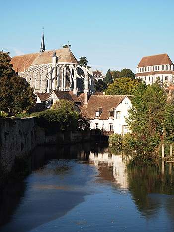
…と、閉館しているピカシェットの家まで来てみた。 向こうのほうにちらりと見えるモザイクの壺。まー次に来る口実ができたということでいいかぁ。 --------------------------------------------------- 我到了[Maison Picassiette]。。。仍然停止開放。。。 但是我看到一個镶嵌细工的甕。 ---------------------------------------------------{kind=link}
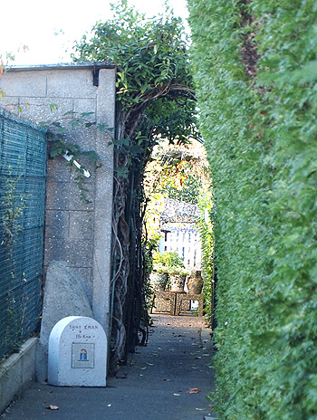
バス乗って帰る。1.1ユーロ。 --------------------------------------------------- 我坐公車到回去。 ---------------------------------------------------{kind=link}
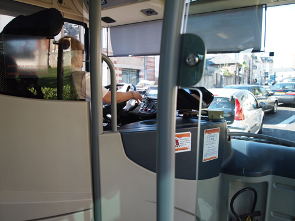
キミは何？握手したいの？ --------------------------------------------------- 你怎麽了?`你想要握手嗎？ ---------------------------------------------------{kind=link}
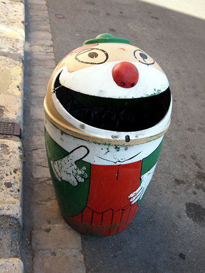
おなかペコペコなので駅前のケバブ屋さんに入って、ケバブラップ。 --------------------------------------------------- 我很餓。肚子哇哇叫。。。我去火車站前面的一家餐廳買沙威瑪。 ---------------------------------------------------{kind=link}
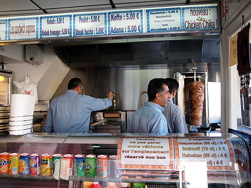
もぐもぐSNCF駅弁。 --------------------------------------------------- 大口大口`SNCF便當。 ---------------------------------------------------{kind=link}
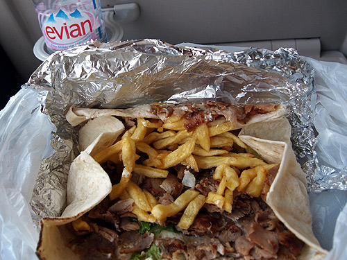